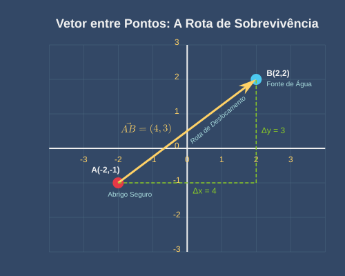
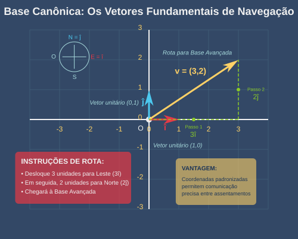

Um vetor \(\vec{v}\) no plano é uma quantidade com magnitude e direção, representado geometricamente por uma seta direcionada e algebricamente por um par ordenado \((x,y)\).
Os vetores são a linguagem matemática de:
Os Cartógrafos usam notação vetorial para marcar não apenas locais, mas também rotas seguras, correntes de vento, fluxos de radiação e padrões migratórios de criaturas mutantes.
Para dois pontos \(A(x_1, y_1)\) e \(B(x_2, y_2)\), o vetor \(\overrightarrow{AB}\) é definido como:
\[ \overrightarrow{AB} = (x_2 - x_1, y_2 - y_1) \]
Representa o deslocamento direcionado necessário para ir do ponto A ao ponto B.
Este vetor captura a direção e magnitude exatas para ir de uma localização a outra no deserto pós-apocalíptico.

A norma (ou magnitude) de um vetor \(\vec{v} = (x,y)\) é dada por:
\[ |\vec{v}| = \sqrt{x^2 + y^2} \]
Geometricamente, representa o comprimento da seta vetorial.
A norma quantifica o "custo total" de um deslocamento, independentemente da direção – seja em termos de energia, tempo, ou recursos necessários.
Um vetor unitário \(\hat{u}\) tem norma igual a 1 e preserva apenas a informação de direção:
\[ \hat{u} = \frac{\vec{v}}{|\vec{v}|} \]
Vetores unitários funcionam como bússolas matemáticas, apontando direções sem comprometimento com distâncias específicas. São fundamentais para:
As bandeiras de sinalização dos guias de caravana usam um sistema codificado por cores baseado nos oito vetores unitários principais, permitindo comunicação visual à distância mesmo durante tempestades de poeira.
A base canônica de \(\mathbb{R}^2\) consiste em dois vetores unitários:
\[ \hat{\imath} = (1,0) \quad \text{e} \quad \hat{\jmath} = (0,1) \]
Qualquer vetor \(\vec{v} = (a,b)\) pode ser escrito como combinação linear:
\[ \vec{v} = a\hat{\imath} + b\hat{\jmath} \]
Estes vetores formam as direções fundamentais do nosso sistema de coordenadas, como as direções cardeais Leste (\(\hat{\imath}\)) e Norte (\(\hat{\jmath}\)) em uma bússola.
